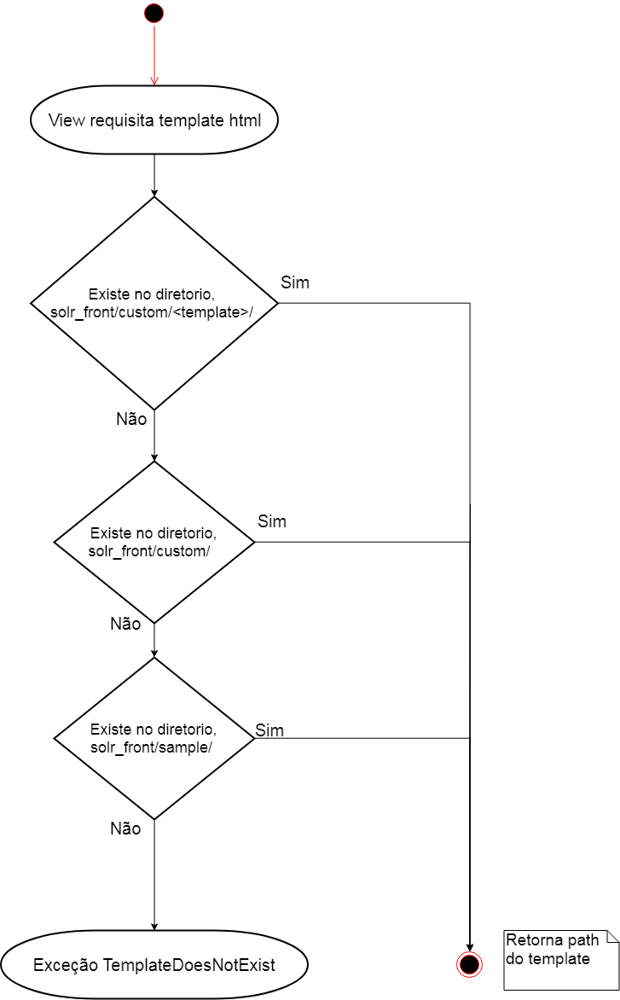

Configuração¶
Estrutura do Grafo e das collections¶
A estrutura de dados do buscador é um grafo, e a mesma é configurada em um arquivo formato JSON <solr_front_conf.json>. O grafo é um conjunto de collections e cada collection também é configurada em um arquivo JSON. O arquivo de configuração tem o nome da collection mais a extenssão json. Por exemplo <nome_da_collection>.json. Os arquivos de configuração das collections ficam na pasta collection na mesma hierarquia que o arquivo de configuração da estrutura do buscador <solr_front_cont.json>. Quando o app solr_front é inicializado (init.py), o mesmo procura pelos arquivos de configuração em um diretório. Existem três maneiras de configurar onde esses arquivos ficam armazenados:
- settings.py A primeira delas é configura a variável SORL_FRONT_CONFIG_PATH no settings.py do projeto Django.
- Pasta /solr_front/conf/custom/ Caso não exista a configuração acima, o sistema procurará os arquivos nessa pasta. Pode-se fazer um link simbólico dessa pasta para uma determinada pasta no files system, porém esse link é sobrescrito toda vez que a aplicação for atualizada.
- Pasta /solr_front/conf/sample/ Caso nenhuma das duas tentativas acima funcione, o buscador irá utilizar a configuração default que vem no sistema.
Arquivos¶
- solr_front_conf.json Este arquivo lista as collections que serão utilizado no Buscador. A estrutura que relaciona as collections é um Grafo.
.py Este arquivo tem todas as configurações de cada collection, como por exemplo mas não só: Lista de Facets Configurações dos gráficos apresentados Configuração de títulos, labels, etc.
Django¶
Urls¶
É necessário a configuração da url que aponta para o buscador no projeto Django, obrigatório a definição do parâmetro ‘template’ nesta url.
Exemplo:
(r'^/solr_front/(?P<template>\w+)/', include(solr_front_urls)),
Templates¶
O sistema de localização dos templates do buscador funciona de maneira parecida que a localização dos arquivos de configuração. Porém não há configurações no settings.py. Os templates são localizados na pasta templates do app solr_front.
- Pasta /solr_front/templates/solr_front/custom/ O sistema procurará a pasta passada no parâmetro de url ‘template’ os templates, caso não encontrar a pasta ele irá buscar os arquivos na raiz da pasta custom. Pode-se fazer um link simbólico dessa pasta para uma determinada pasta no files system. Esse link não deverá ser sobrescrito porque está no .gitignore, mas caso seja removido basta recriar o apontamento para a pasta desejada.
- Pasta /solr_front/templates/solr_front/sample/ Caso a tentativa acima não funcione, o buscador irá utilizar os templates default que vem no sistema.

** Diagrama de atividades do carregamento dos templates **
Arquivos¶
Listar os arquivos de template
settings.py¶
INSTALLED_APPS¶
Incluir o app “solr_front”
TEMPLATE_CONTEXT_PROCESSORS¶
Incluir os dois processadores de contexto do buscador:
- “solr_front.context_processors.get_navigate_fields”
- “solr_front.context_processors.navigation_tree”
Logging¶
O app Django solr_front usa o mecanismo padrão de log do Django.
A aplicação utiliza a handler “solr_front”. Caso você tenha uma infraestrutura de log, simplesmente adicione o handler que todos os eventos “logáveis”, erros etc serão logados.